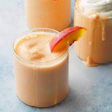

Peach Milkshake

Description
We know very well that there are currently millions of recipes that can be prepared with peaches,
and this is because each of them has unique benefits and properties for the body, the peach is a
fruit that has become well known thanks to its delicious flavor since it has a wonderful nutritional
value, without a doubt it is wonderful and should be consumed at least twice a week or, failing that,
every day so that we can see what each of these properties are in our body .
Ingredients
To prepare this milkshake you will need a few ingredients which will be very easy to
get, you will not have any inconvenience.
- Four medium peaches
- Half a glass of milk
- Four scoops of vanilla ice cream
- Half a cup of peach syrup
Steps
- The first step will always be to place all the ingredients on the table in order
to keep an order and not make any mistakes in the preparation.
- After this, we proceed to place the previously washed, cut, seedless and shellless peaches in
the blender, then add the milk, the ice cream balls and the peach syrup.
- Se procede a licuar todo hasta obtener una mezcla homogénea y listo.
- It is served in glasses and a straw is placed on it.
- You can decorate by placing whipped cream, peach slices or any other type of topping of your
choice or also share this milkshake with a delicious cake of your choice, be it a vanilla cake
to counteract the delicious flavor of the milkshake.